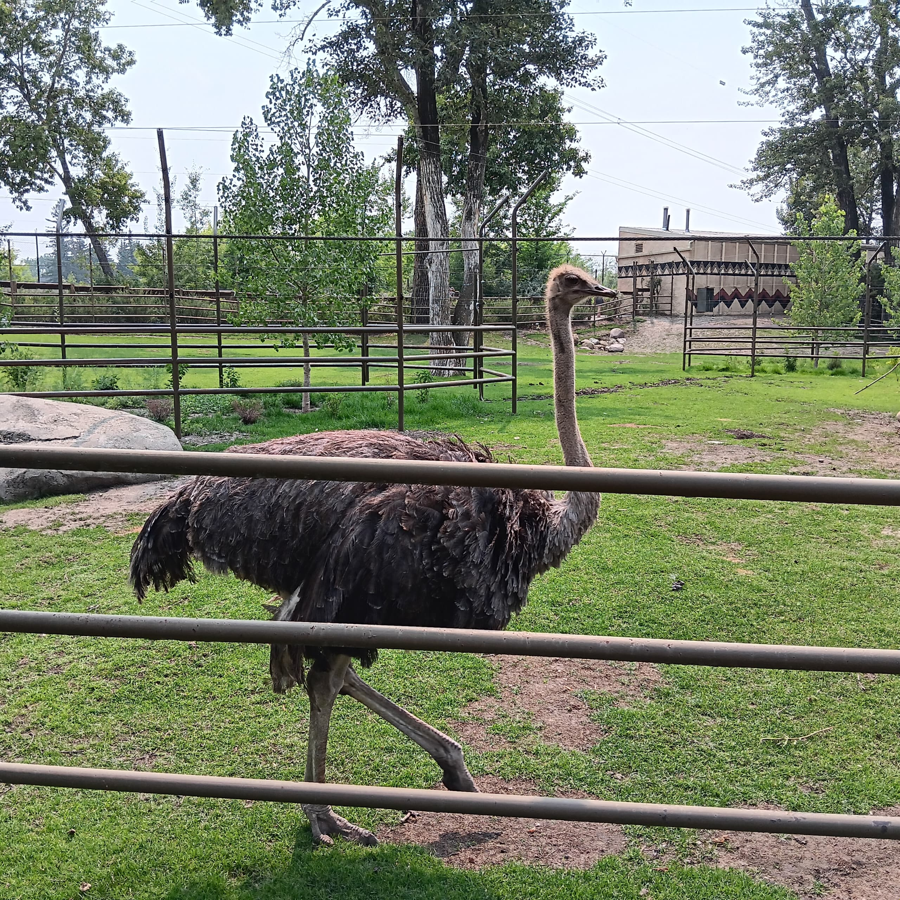

Number: 1
WHO IS JAHSWILL?
I am Enebeli Jahswill, a 21-year-old student of the Southern Alberta Institute Of Technology (SAIT), majoring in Web Design And Development. My passion for Tech started almost half a decade ago when a family friend who was a developer introduced me to the Python programming language, and since then, I have dabbled in various aspects of the Tech industry. Some of the things I have come to have knowledge about since my interest in Tech started are: Backend development using Python programming language (Took a self-paced course on SoloLearn, although I didn't complete it), Data Analytics using Power Bi (Took an online course/internship with sidehustle.ng) and more recently have started gaining knowledge on languages used for web development (HTML and CSS amongst others).
One other thing I also have an interest in is Photography, although I am no expert when it comes to taking pictures, but I always try to find an opportunity to capture the beauty of nature (See some of my pictures below). It is my hope that someday I will be able to master the core aspects of the Tech industry and become a sought-after Tech person.

HOBBIES
Asides being interested in the Tech industry, there are other things I enjoy doing, things like playing Table Tennis, watching movies, reading novels, listening to songs and observing nature. I don't do any of these things as much as I used to, but I try to make time for them.
GOALS
Career-wise, my main goal is to have a mastery of all necessary skills needed to survive in the tech industry.